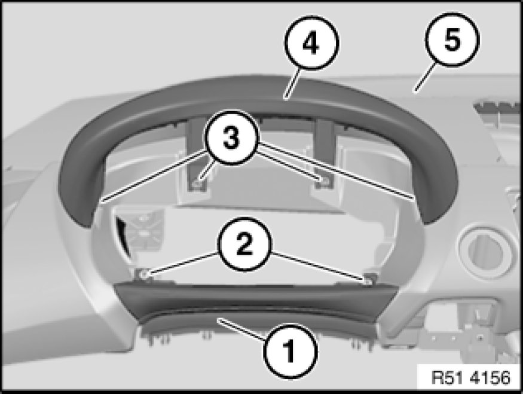
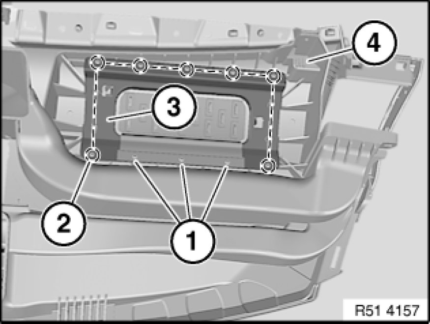
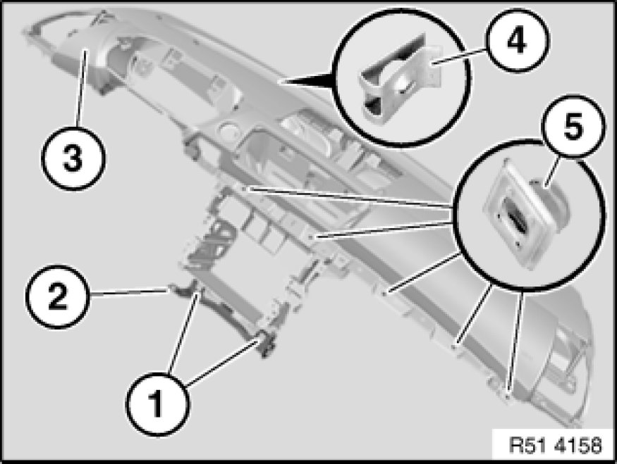

51 45 031 Replacing Instrument Panel Trim
51 45 031 - Replacing instrument panel trim

Necessary preliminary tasks:
- Remove instrument panel trim 51 45 030 Removing and Installing Instrument Panel Trim
Depending on version:
- Remove Central Information Display
- Remove solar sensor

Note:
Description is shown on the E87 by way of example. There may be differences in detail in the case of other models.

Release screws (2) and remove steering column gap cover (1) trim panel (5).
Release screws (3) and remove cover (4) from trim panel (5).

If necessary release screws (1 and 2).
If necessary, remove passenger airbag channel (3) from trim panel (4).

Release screws (1) and remove holder (2).
None of the speed nuts (4) and clips (5) on trim panel (3) must not be damaged.